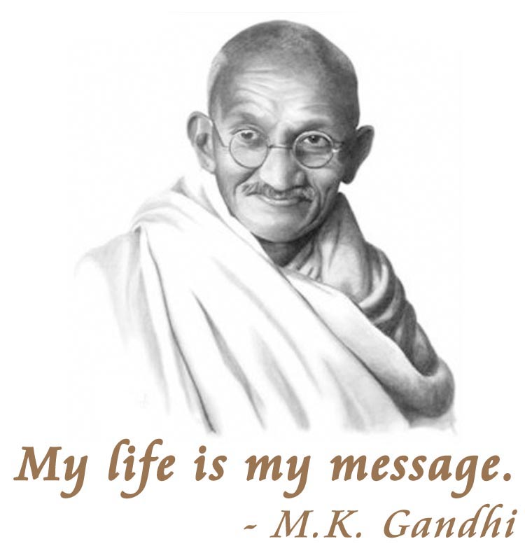
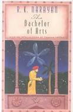

Harboring a passion for books is considered to be a virtue. "Books are uniquely portable magic" said Stephen King a prominent american author. Aliens, monsters, dragons, fairies, witches and wizards, all come alive through stories. Books have the power to transport a reader to a fairyland, in space, a faraway land or in the ocean.
Reading is always a personal preference. Even in a family, each member may pick a different book while visiting a library or a bookstore. One may wonder why so much emphasis is given to reading.
1. Reading introduces readers to different ideas and helps them solve their problems.
2. Reading helps people form an opinion about things around them and broadens their perspective.
3. Reading makes one more knowledgeable.
4. It is found that reading fiction books enhances the imagination of the readers. Visualization of the characters and the settings makes them more creative.
5. Reading books slowly refines one's vocabulary and thoughts. It eventually helps one write better.
6. Reading books keeps one's mind active, strong and healthy.
"If you dont like to read, you haven't found the right book," says J.K.Rowling, author of the Harry Potter series. Visit a library or a bookstore to find that perfect book. Some examples of books are:
1. Hind Swaraj by Mahatma Gandhi
2. You Can Win by Shiv Khera
3. Malgudi Days by R.K.Narayan
4. Twilight in Delhi by Ahmed Ali
5. Maximum City by Suketu Mehta
6. My Experiments with Truth by Mahatma Gandhi
7. A Fine Balance by Rohinton Mistry
8. Midnight's Children by Salman Rushdie
9. What the Body Remembers by Shauna Singh
10. India: A Million Mutinies Now by V.S. Naipul.
11. The God of Small Things by Arundhati Roy.
Here are some of my favourite books
 Here are some of the stories written by me
Here's my next story